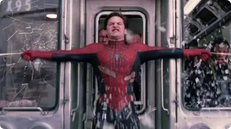
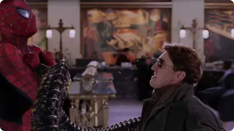
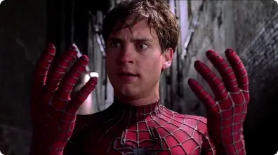

Sinopse: O Dr. Otto Octavius é transformado em Doutor Octopus quando uma falha em uma experiência de fusão nuclear resulta em uma explosão que mata sua esposa. Ele culpa o Homem-Aranha pelo acidente e deseja vingança. Enquanto isso, o alter ego do herói, Peter Parker, perde seus poderes. Para complicar as coisas, o seu melhor amigo odeia o Homem-Aranha e sua amada fica noiva..
- Ano: 2004
- Diretor: Sam Raimi

- 
- 